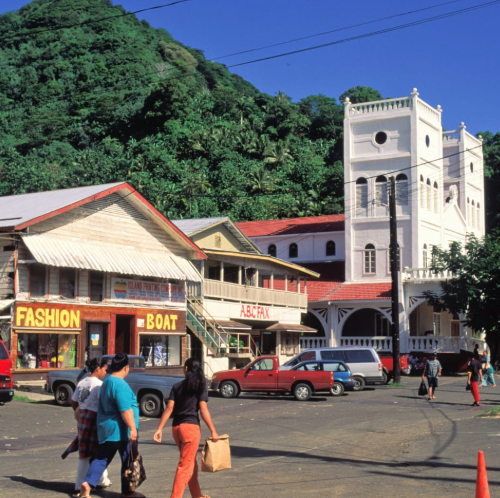
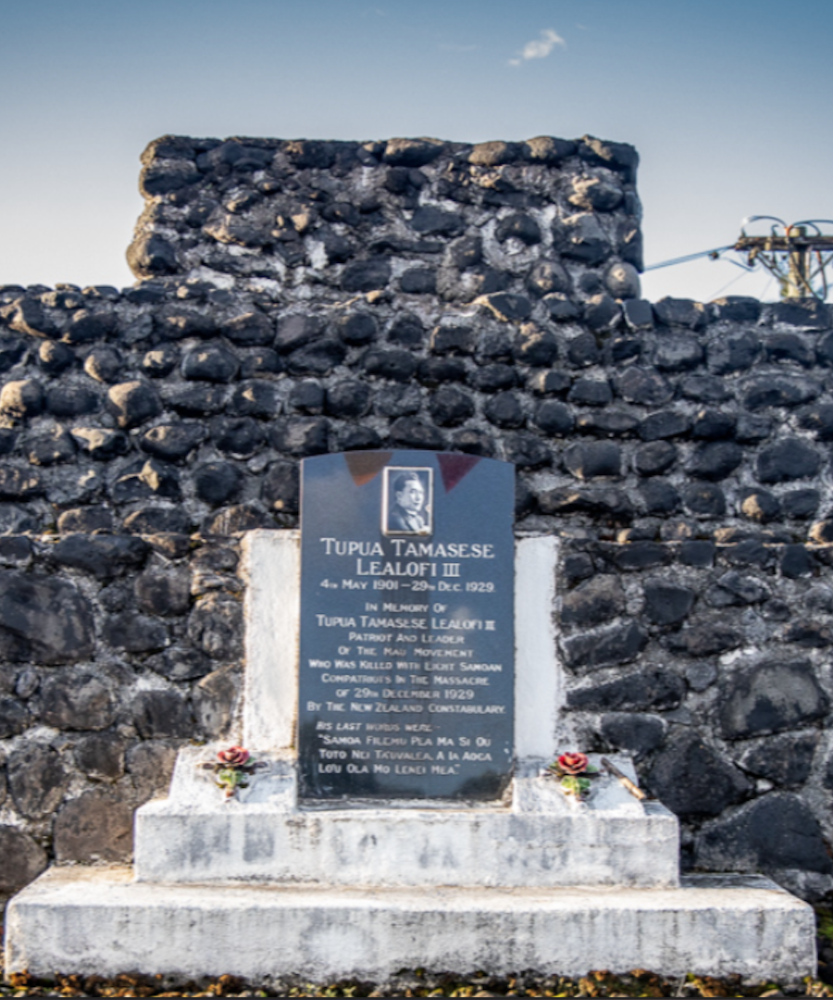

History & Key Figures of Samoa
 The history of Samoa's journey to independence through external influences and internal struggles for self-determination. In the late 19th century, European powers, particularly Germany, Britain, and the United States, sought control of Samoa due to its strategic location in the Pacific. Initially, Britain controlled the islands, but by the late 1800s, the islands were split between Germany and the U.S. The Treaty of Berlin in 1899 formally divided Samoa into two parts: the U.S. gained control of the eastern islands (now American Samoa), while the western islands came under German control (later administered by New Zealand after World War I).
The history of Samoa's journey to independence through external influences and internal struggles for self-determination. In the late 19th century, European powers, particularly Germany, Britain, and the United States, sought control of Samoa due to its strategic location in the Pacific. Initially, Britain controlled the islands, but by the late 1800s, the islands were split between Germany and the U.S. The Treaty of Berlin in 1899 formally divided Samoa into two parts: the U.S. gained control of the eastern islands (now American Samoa), while the western islands came under German control (later administered by New Zealand after World War I).
Sources: National Park Service: History and the Islands of Samoa & Wikipedia: History of Samoa
 Samoa's path to independence was shaped by the rise of the Mau Movement in the 1920s, a non-violent campaign seeking greater autonomy from New Zealand rule. The Mau gained momentum, particularly after the devastating 1918 influenza pandemic, which killed a significant portion of the population. The movement, led by figures like Tupua Tamasese Lealofi III, faced violent repression, including the killing of Tamasese by New Zealand forces in 1929. Despite this, the movement persisted, and Samoa eventually gained independence in 1962, becoming the first Pacific nation to do so.
Samoa's path to independence was shaped by the rise of the Mau Movement in the 1920s, a non-violent campaign seeking greater autonomy from New Zealand rule. The Mau gained momentum, particularly after the devastating 1918 influenza pandemic, which killed a significant portion of the population. The movement, led by figures like Tupua Tamasese Lealofi III, faced violent repression, including the killing of Tamasese by New Zealand forces in 1929. Despite this, the movement persisted, and Samoa eventually gained independence in 1962, becoming the first Pacific nation to do so.
Sources: National Park Service: History and the Islands of Samoa & New Zealand History: New Zealand in Samoa
 In contrast, American Samoa remained a U.S. territory. Despite its political status, the Samoan people maintained their traditional way of life, and in the 20th century, American Samoa adopted its own constitution in 1967 and elected its first governor in 1977. The division of the Samoan islands into two politically distinct entities reflects Samoa's complex colonial history and the continued cultural connections between the regions.
Source: National Park Service: History and the Islands of Samoa
 Key figures in Samoa's history include leaders like Tupua Tamasese Lealofi III, whose sacrifice symbolizes the fight for independence. Other influential figures include Prime Minister Fiame Mata'afa Faumuina Mulinu'u II, who played a crucial role in Samoa's post-independence development. Their leadership has left an enduring legacy in shaping the nation's identity.
Source: National Park Service: History and the Islands of Samoa